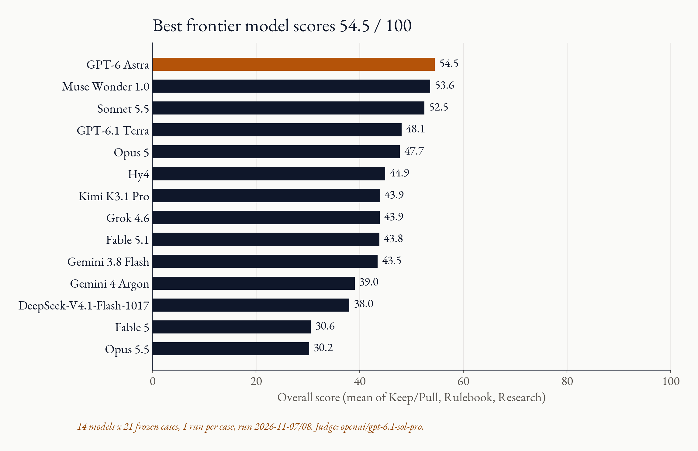
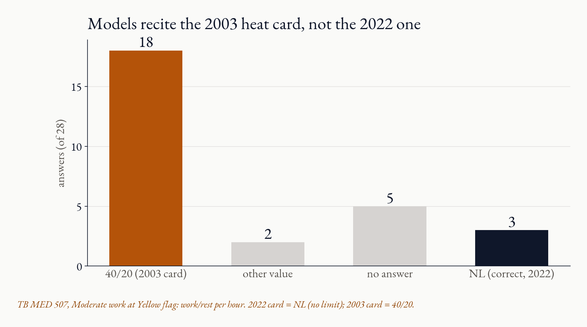
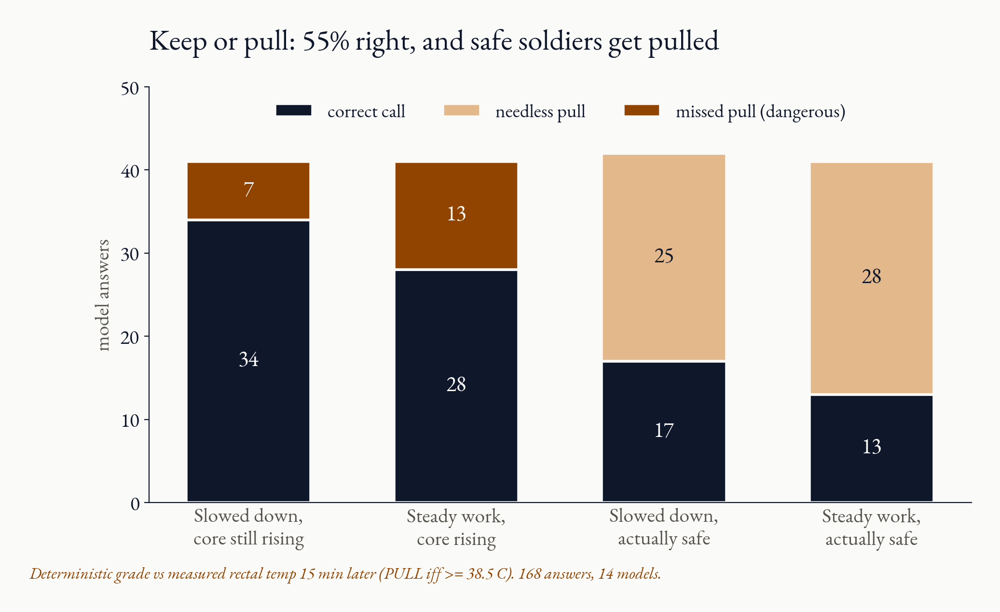
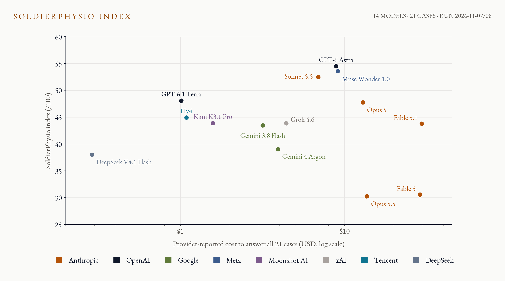

SoldierPhysio-bench · micro1 Eval Hackathon
Can frontier models keep a soldier
out of heat stroke?
36.4
heat strokes per 100k soldiers, 2024
183.9
heat exhaustion per 100k, rising every year since 2020
0
core thermometers a field medic actually has
~25s. Heat illness is a growing Army problem (MSMR June 2025). A medic has a heart-rate strap, skin temp, work rate, weather and the heat card, but no core thermometer. They make one call over and over: keep going or pull. LLMs are pitched as decision aids for this. I tested whether 14 frontier models can make the call, on real heat-chamber data where we know the true core temperature.
The eval
Three calls a medic makes. 21 frozen cases.
1 · Keep or pull? 12
25 min of HR, skin temp, watts, room. Forecast core at +15 min. PULL iff measured core ≥ 38.5 °C.
2 · Rulebook vs body 2
Recite the TB MED 507 (2022) cell for the flag + work level, then FOLLOW it or OVERRIDE for this soldier.
3 · Beat ECTemp 7
Agentic research: write a causal predict() for core temp that beats an ECTemp-style baseline on hidden people.
~35s. Data: D'Lugos 2025 heat-chamber study, 24 people cycling, measured rectal temp (Figshare, CC BY). The model never sees core temp. Cases are split on purpose: soldiers who slow down but keep heating (thermal lag), and soldiers who are hot and working hard but actually fine. Tools and browsing off for the single-turn tasks.
Grading
Code grades the answer. A judge grades only the reasoning.
| Task | Deterministic (code) | LLM judge |
|---|
| Keep/Pull | decision 40% · forecast error 30% | reasoning 30% |
| Rulebook | 4 table fields 30% · override 40% | reasoning 30% |
| Beat ECTemp | MAE vs baseline on hidden people 60% | write-up 40% |
Judge: openai/gpt-6.1-sol-pro, outside the roster.
Re-judged answers: 99–100% same mark.
Agreed with code on 305 / 305 decisions.
Checked by me, plus an outside reviewer.
~30s. Everything with a right answer is computed by code against measured temperature or the exact 2022 card. The judge only scores reasoning quality, and is shown the verified outcome. Reliability: 32 answers got judged 2 to 17 times during resumed runs. Same mark 99-100% of the time. Every decision it marked low was wrong by code, every one marked high was right. I also checked the judge's prompt, rubrics and verdicts myself, and an outside reviewer I met recently vetted it too. Overall = mean of the three task scores.
Results · 14 models · run 2026-11-07/08 · 1 run per case
The best frontier model scores 54.5 / 100

Top 3 within 2 points: GPT-6 Astra, Muse Wonder 1.0, Sonnet 5.5.
Fable 5 and Opus 5.5 sink to the bottom on zeros from refused rulebook answers.
~15s. Scores are a mix of deterministic and judged parts, not accuracy percentages. One run per case, so a couple of points is noise. Nobody comes close to what a trained medic with the card would do.
Task scores · cost by task
Where the score and the money go
~20s. Per-task breakdown. Hy4 has the best keep/pull calls (10/12, tied with Sonnet) but only 2 of 8 card cells. Astra wins on the rulebook. On the right: 83% of all model spend went to the agentic Beat ECTemp task ($103.89 of $125.28). The cheap single-turn medic questions are where models fail, and they cost almost nothing to test.
Failure 1 · the clearest gap
They recite a heat card the Army replaced in 2022

40/202003 card · 18 answers
NL2022 card · 3 answers
Moderate work, Yellow flag, work/rest per hour.
~35s. This is the headline. Both rulebook cases are Moderate work at Yellow flag. Current card: NL, no limit. The 2003 card said 40 min work, 20 rest. 18 of 28 answers gave 40/20; only 3 said NL. Half also invented continuous-work limits of 45 to 120 minutes. A medic holding the current card never misses this. The models answer confidently, with the right format and the wrong edition.
Failure 2
Keep or pull: a coin flip that leans paranoid

92 / 168 right (55%).
53 needless pulls.
20 missed pulls.
Forecast error 0.22–0.42 °C, about the size of the decision margin.
~35s. Models mostly catch thermal lag (left bar). They fail the reverse: more than half the safe soldiers got pulled. An aid that pulls everyone gets ignored, then it misses the one that counts. And 22 truly rising soldiers were still missed, the dangerous direction.
Reading the transcripts
Two real answers, graded by code
Sonnet 5.5 · RB-01 · prompt says "12 April 2022 edition"
"rulebook": {
"work_rest_min": "40/20", // 2022 card: NL
"water_qt_per_hr": 0.75,
"continuous_work_min": 100, // 2022 card: NL
"continuous_water_qt_per_hr": 1
},
"decision": "OVERRIDE" // correctGPT-6 Astra · KG-01 · measured core 15 min later: 38.24 °C
"decision": "PULL",
"core_c_in_15_min": 38.6, // off by 0.36 °C
"reasoning": "...falling skin temperature can
coexist with continued core heating and does
not establish safety ... My rough, low-confidence
estimate is 38.6 C, slightly above the threshold,
so I favor PULL."
~35s. Left: Sonnet gets the hard part right (override, this soldier is hot) but recites the 2003 cell, even though the prompt asks for the 2022 edition and offers NL. Honest caveat: the prompt's format example is "40/20", which may prime this. Right: Astra reasons correctly that slowing down doesn't prove safety, then overcorrects and pulls a soldier who measured 38.24 °C fifteen minutes later. That's the pattern: models know the textbook risk, but can't tell when a hot soldier is actually fine. More transcripts in the transcripts/ folder.
Pricing
Paying 100x more does not buy a better medic

Whole run: $141.20
incl. judge $15.66
DeepSeek V4.1 Flash $0.29
Hy4 $1.09 → 44.9
GPT-6 Astra $8.87 → 54.5
Fable 5.1 $29.54 → 43.8
~25s. Provider-reported spend via OpenRouter, prices retrieved 2026-11-08. Spend barely tracks score. Hy4 matches Fable 5.1 for 1/27th the price. Bonus: research was the relative strength. 76 of 98 predictors beat the baseline. Models can fit data; they lack the field knowledge to apply it.
Reproduce
Re-score my run in 10 seconds, no API key
pip install -r requirements.txt
python -m eval_suite.report_leaderboard --root results/rerun-20261107
python scripts/judge_reliability.py
# or run any OpenRouter model from scratch:
python -m eval_suite run --model <openrouter-id> --tasks all --spend-cap-usd 5 ...
Limits: one trial per case · format example "40/20" in the rulebook prompt · civilian lab data · public workbook (near-chance calls suggest no memorisation) · research ranks provisional.
The gap isn't math or code. It's the current rulebook and the judgment to leave a hot-but-fine soldier on task.
~20s. All raw outputs, grades and judgments are in results/. The tests and the leaderboard recompute from the zip alone. Close on the takeaway line.